The vega of an option, , is defined as the rate of change of the option price respected to the volatility of the underlying asset:
where Π is the option price and σ is volatility of the stock price. We next show the derivation of vega for various kinds of stock option.
For a European call option on a non-dividend stock, vega can be shown as
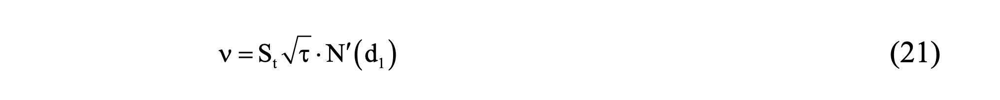
The derivation of (21) is
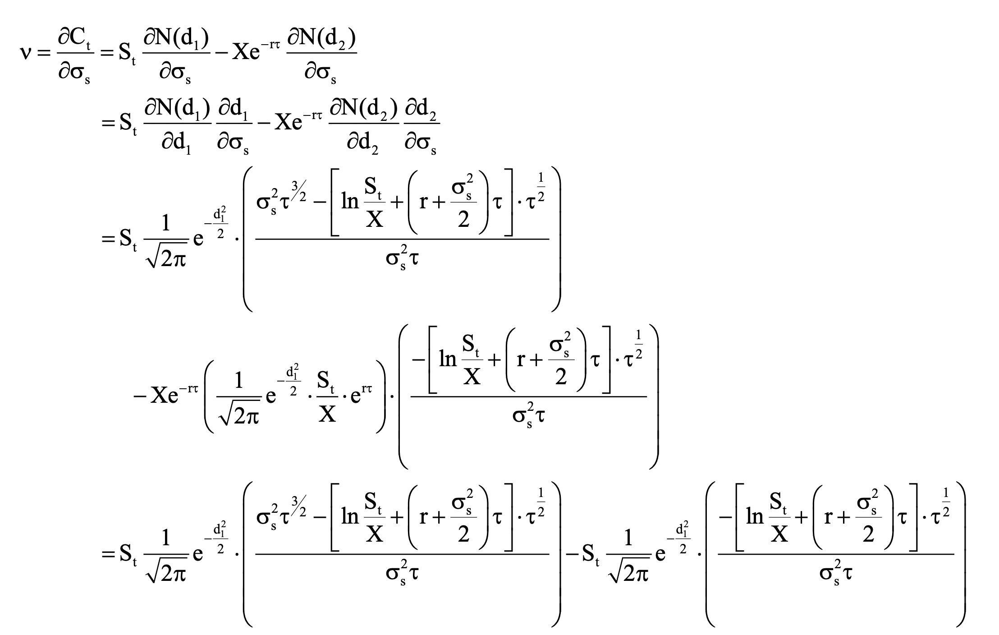
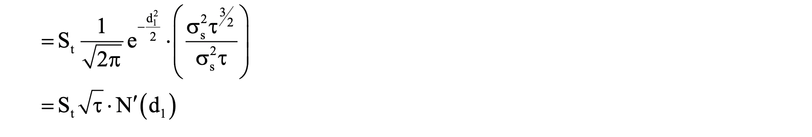
For a European put option on a non-dividend stock, vega can be shown as
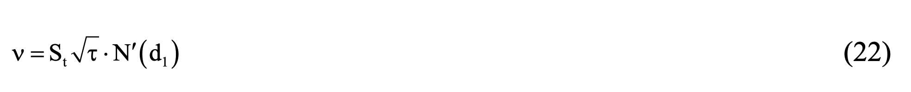
The derivation of (22) is
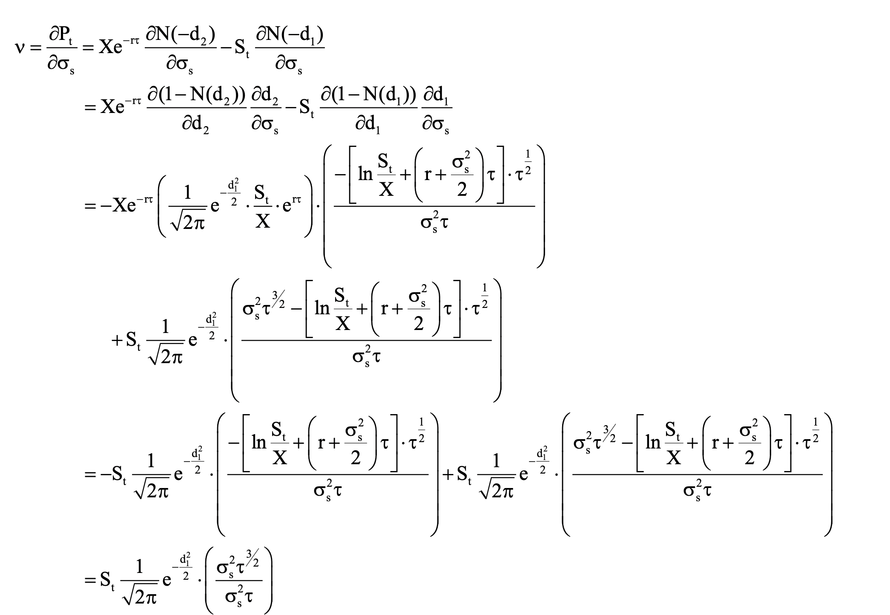
For a European call option on a dividend-paying stock, vega can be shown as
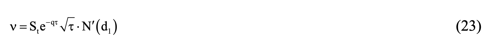
The derivation of (23) is
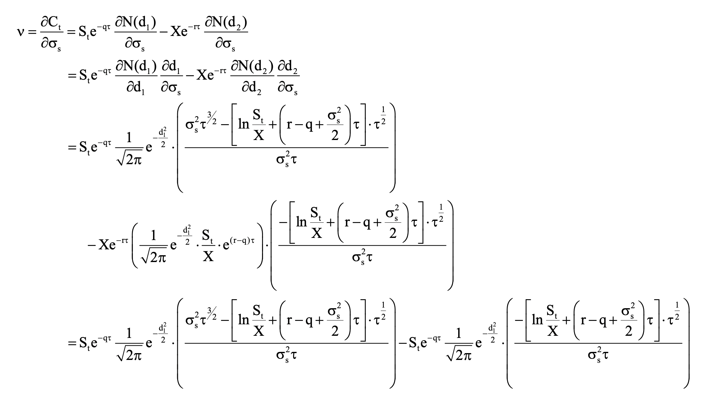
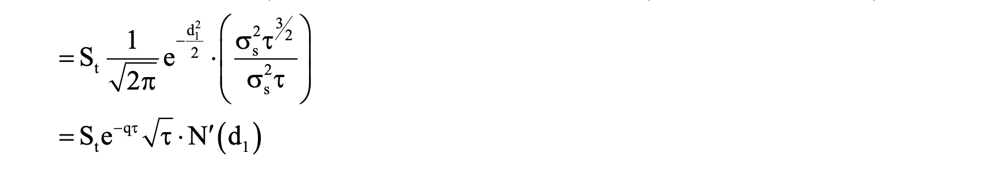
For a European call option on a dividend-paying stock, vega can be shown as
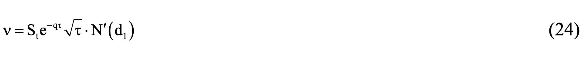
The derivation of (24) is
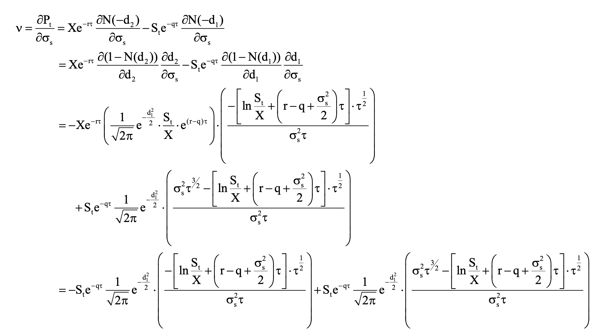
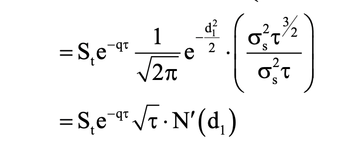
Suppose a delta-neutral and gamma-neutral portfolio has a vega equal to ν and the vega of a particular option is ν0 . Similar to gamma, we can add a position of -ν/ν0 in option to make a vega-neutral portfolio. To maintain delta-neutral, we should change the underlying asset position. However, when we change the option position, the new portfolio is not gamma-neutral. Generally, a portfolio with one option cannot maintain its gamma-neutral and vega-neutral at the same time. If we want a portfolio to be both gamma-neutral and vega-neutral, we should include at least two kind of option on the same underlying asset in our portfolio.
For example, a delta-neutral and gamma-neutral portfolio contains option A, option B, and underlying asset. The gamma and vega of this portfolio are -3,200 and -2,500, respectively. Option A has a delta of 0.3, gamma of 1.2, and vega of 1.5. Option B has a delta of 0.4, gamma of 1.6 and vega of 0.8. The new portfolio will be both gamma-neutral and vega-neutral when adding ωA of option A and ωB of option B into the original portfolio.
From two equations shown above, we can get the solution that ωA = 1000 and ωB = 1250. The delta of new portfolio is 1000 x .3 + 1250 x 0.4 = 800. To maintain delta-neutral, we need to short 800 shares of the underlying asset.
The rho of an option is defined as the rate of change of the option price respected to the interest rate:
where Π is the option price and r is interest rate. The rho for an ordinary stock call option should be positive because higher interest rate reduces the present value of the strike price which in turn increases the value of the call option. Similarly, the rho of an ordinary put option should be negative by the same reasoning. We next show the derivation of rho for various kinds of stock option.
For a European call option on a non-dividend stock, rho can be shown as
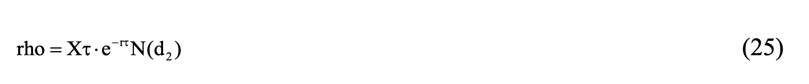
The derivation of (25) is
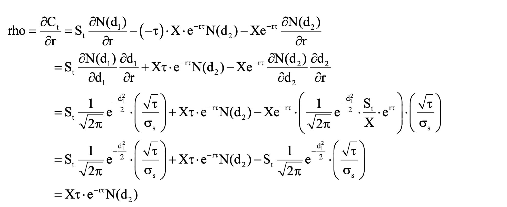
For a European put option on a non-dividend stock, rho can be shown as
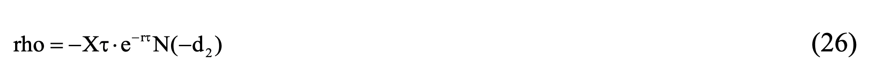
The derivation of (26) is
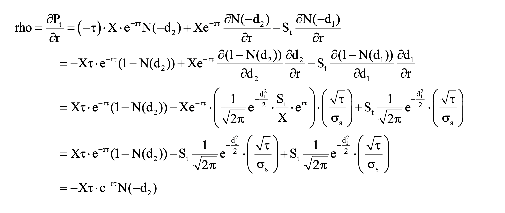
For a European call option on a dividend-paying stock, rho can be shown as
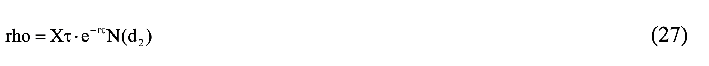
The derivation of (27) is
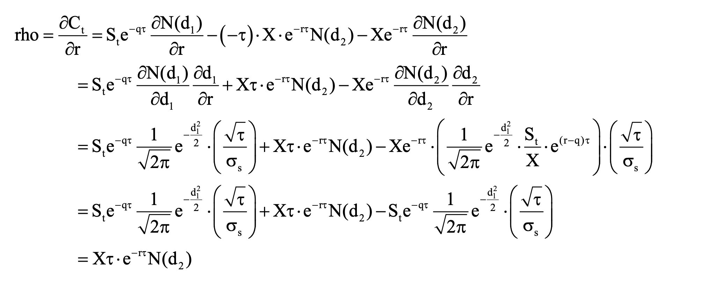
For a European put option on a dividend-paying stock, rho can be shown as
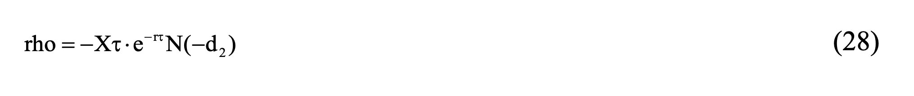
The derivation of (28) is
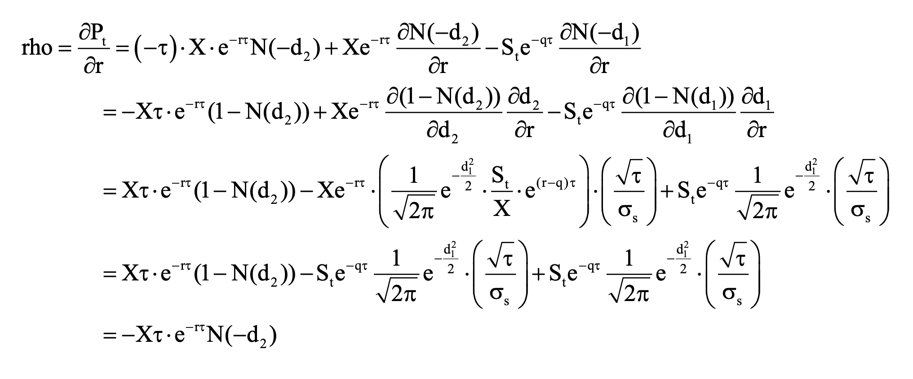
Assume that an investor would like to see how interest rate changes affect the value of a 3-month European put option she holds with the following information. The current stock price is $65 and the strike price is $58. The interest rate and the volatility of the stock is 5% and 30% per annum respectively. The rho of this European put can be calculated as following.
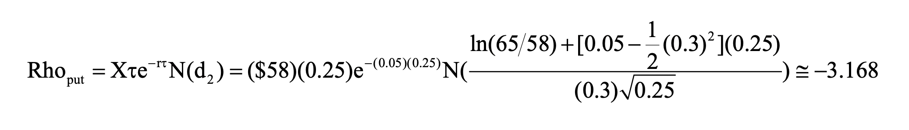
This calculation indicates that given 1% change increase in interest rate, say from 5% to 6%, the value of this European call option will decrease 0.03168 (0.01 x 3.168). This simple example can be further applied to stocks that pay dividends using the derivation results shown previously.
For a European call option on a non-dividend stock, sensitivity can be shown as
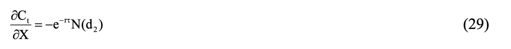
The derivation of (29) is
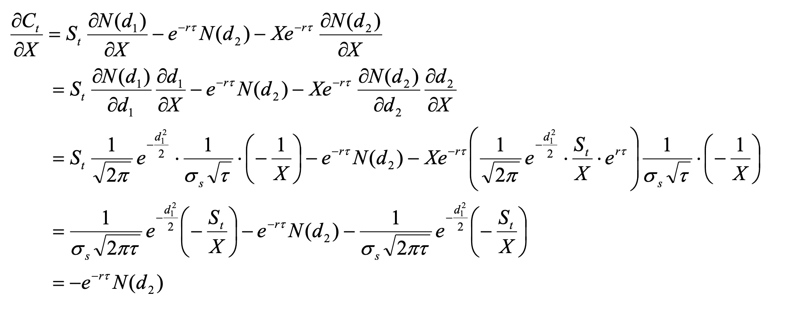
For a European put option on a non-dividend stock, sensitivity can be shown as
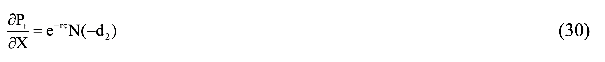
The derivation of (30) is
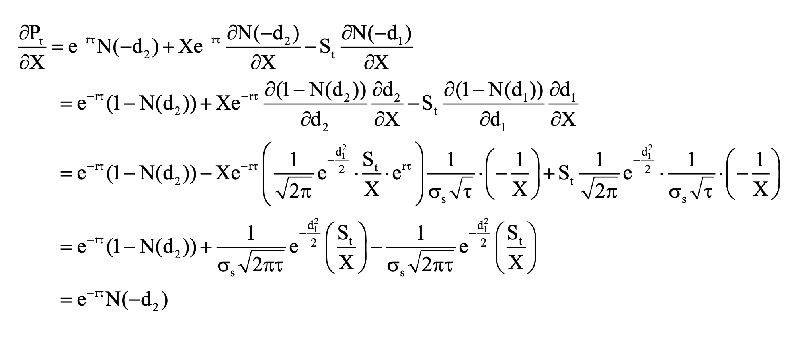
For a European call option on a dividend-paying stock, sensitivity can be shown as
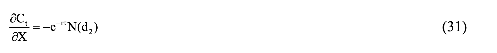
The derivation of (31) is
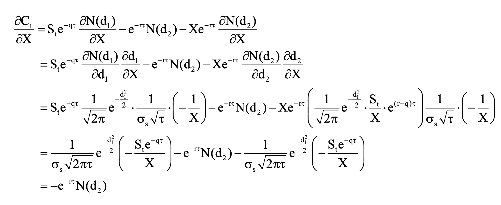
For a European put option on a dividend-paying stock, sensitivity can be shown as
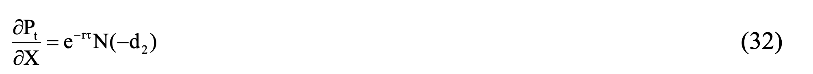
The derivation of (32) is
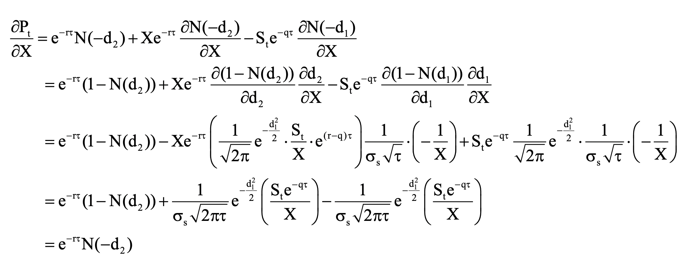
So far, the discussion has introduced the derivation and application of each individual Greeks and how they can be applied in portfolio management. In practice, the interaction or trade-off between these parameters is of concern as well. For example, recall the partial differential equation for the Black-Scholes formula with non-dividend paying stock can be written as
Where Π is the value of the derivative security contingent on stock price, S is the price of stock, r is the risk-free rate, and σ is the volatility of the stock price, and t is the time to expiration of the derivative. Given the earlier derivation, we can rewrite the Black-Scholes PDE as
This relation gives us the trade-off between delta, gamma, and theta. For example, suppose there are two delta neutral (δ = 0) portfolios, one with positive gamma (Γ > 0) and the other one with negative gamma (Γ < 0) and they both have value of $1 (Π = 1) . The trade-off can be written as
For the first portfolio, if gamma is positive and large, then theta is negative and large. When gamma is positive, change in stock prices result in higher value of the option. This means that when there is no change in stock prices, the value of the option declines as we approach the expiration date. As a result, the theta is negative. On the other hand, when gamma is negative and large, change in stock prices result in lower option value. This means that when there is no stock price changes, the value of the option increases as we approach the expiration and theta is positive. This gives us a trade-off between gamma and theta and they can be used as proxy for each other in a delta neutral portfolio.